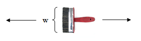

Question Code : 1016
Problem Name : Problem 1016 - Brush (II)
Problem Tags :
Greedy
Problem Statement :
After the long contest, Samee returned home and got angry after seeing his room dusty. Who likes to see a dusty room after a brain storming programming contest? After checking a bit he found a brush in his room which has width w. Dusts are defined as 2D points. And since they are scattered everywhere, Samee is a bit confused what to do. So, he attached a rope with the brush such that it can be moved horizontally (in X axis) with the help of the rope but in straight line. He places it anywhere and moves it. For example, the y co-ordinate of the bottom part of the brush is 2 and its width is 3, so the y coordinate of the upper side of the brush will be 5. And if the brush is moved, all dusts whose y co-ordinates are between 2 and 5 (inclusive) will be cleaned. After cleaning all the dusts in that part, Samee places the brush in another place and uses the same procedure. He defined a move as placing the brush in a place and cleaning all the dusts in the horizontal zone of the brush.
You can assume that the rope is sufficiently large. Now Samee wants to clean the room with minimum number of moves. Since he already had a contest, his head is messy. So, help him.
Code :
#include<bits/stdc++.h>
using namespace std;
#define ll long long int
#define pii pair<int,int>
#define pll pair<ll,ll>
#define vi vector<int>
#define pb push_back
#define mp make_pair
#define fr first
#define se second
#define MOD 1000000007
#define pl pair < int , vector < int > >
int main ()
{
//freopen("input.txt","r",stdin);
ios_base::sync_with_stdio(false);
int t;
int cas=1;
cin>>t;
while (t--){
int n,w;
cin>>n>>w;
vi yy;
for (int i=0;i<n;i++){
int foo,y;
cin>>foo>>y;
yy.pb(y);
}
sort(yy.begin(),yy.end());
ll ly=yy[0]+w;
int co1=1;
for (int i=1;i<yy.size();i++){
if (yy[i] <= ly)
continue;
else{
co1++;
ly = yy[i]+w;
}
}
ly=yy[yy.size()-1]-w;
int co2=1;
for (int i=yy.size()-2;i>=0;i--){
if (yy[i] >= ly)
continue;
else{
co2++;
ly = yy[i] - w;
}
}
cout<<"Case "<<cas++<<": "<<min(co1,co2)<<endl;
}
return 0;
}